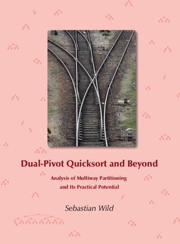
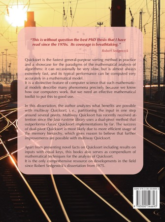
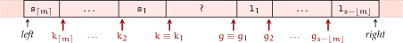

Ph.D. ThesisOctober 2016
Dual-Pivot Quicksort and Beyond: Analysis of Multiway Partitioning and Its Practical Potential
 Read online
Read online
- Thesis
In my dissertation I analyze a parametric scheme of Quicksort variants with an arbitrary number of pivots. Using the mathematical analysis, I discuss in detail, which choices for parameters look promising.
My dissertation won the GI Dissertationspreis 2016 jointly awarded by GI, SI and OCG for the best thesis in computer science in Germany, Switzerland and Austria (announcement).


While writing it up, the dissertation grew into a sizable collection of mathematical tools for the analysis of Quicksort. I summarized the main algorithmic findings in an invited article in self-contained form.
Thesis defense Dual-Pivot Quicksort and Beyond: Analysis of Multiway Partitioning and Its Practical Potential
The thesis defense.

Invited talk Quicksorts of the 21st Century
Covers this paper and Algorithmica (2020).

Also recorded: full session recording · another recording


Generic one-pass multiway partitioning
The parametric partitioning algorithm that I consider
- partitions the input into $s$ segments at once (around $s-1$ pivots),
- chooses these pivots as order statistics from a sample according to the sampling parameter $\mathbf t$,
- works in “one pass” over the array, growing $\lceil m\rceil$ segments from the left and $s-\lfloor m\rfloor$ segments from the right, where $0\le m\le s$ is another parameter.

The analysis covers the average costs of Quicksort with any choice of the above parameters.
Equal Keys
Chapter 8 of my dissertation contains an analysis of generic $s$-way Quicksort on inputs with equal elements. I describe the result in more details in the context of the follow-up ANALCO paper on Quicksort with equal keys.
For the case of a random string drawn uniformly from all length-$n$-strings over the alphabet $ \lbrace 1,\ldots,u \rbrace $, my dissertation gives a general asymptotic solution (Theorem 8.17). This case is particularly nice in that—under the assumption that $n\gg u$—the costs for Quicksort have the same form as for random permutations, only with $\ln(n)$ replaced by $\ln({\color{red!50!black}u})$.
I presented this part of the analysis in Dagstuhl, see the slides.
Relation to Other Publications
The analyses in my dissertation build on my papers on YBB Quicksort, in particular Analysis of Pivot Sampling in Dual-Pivot Quicksort, and are an extension thereof.
The analysis of Quicksort with equal keys is an extension of Chapter 8 of my dissertation.
Entropy-Equivalent Sampling
A key idea to fairly compare different $s$-way Quicksort variants is that of entropy-equivalent sampling: Choose one single pivot of the same quality as the $s-1$ pivots chosen according to sampling parameter $\mathbf t$. I found a way to do that for any $\mathbf t$ so that one can exactly simulate the subproblem-shrinking effect of one $s$-way partitioning round by a certain number of binary partitioning rounds.
We can then fairly compare the intrinsic values of a certain partitioning method without having pivots of different quality skewing the picture.
This idea is explained in the slides of my defense talk (below). A second set of slides from a more comprehensive 1h-talk about the topic is also available.
Printed Version
A nice hardcover version is available (for under 40 USD for a nicely printed full-color hardcover book) from IngramSpark, a large print-on-demand publisher. Check here where to buy.
Errata for Print Version
The print version is essentially identical to the archive version in KLUEDO (urn above). Various (harmless) typos have been spotted afterwards, but also the following errors. The pdf version on this site always contains the most current version in which these errors have been corrected.
- p 146 Algorithm 8: The case distinction in line 17 should only be executed if $k\le g$ holds.
Reference
Sebastian Wild: Dual-Pivot Quicksort and Beyond: Analysis of Multiway Partitioning and Its Practical Potential. Dissertation (Ph.D. Thesis), Department of Computer Science, Technische Universität Kaiserslautern.
BibTeX
@phdthesis{Wild2016,
title = {Dual-Pivot {Quicksort} and Beyond: Analysis of Multiway Partitioning and Its Practical Potential},
author = {Sebastian Wild},
publisher = {self-published},
school = {University of Kaiserslautern},
type = {{Dissertation (Ph.D. thesis)}},
year = {2016},
isbn = {978-3-00-054669-3},
urn = {urn:nbn:de:hbz:386-kluedo-44682},
urlHidden = {https://www.wild-inter.net/publications/wild-2016}
}
Timeline
- 7 Mar 2016 workshop talk at Dagstuhl Seminar 16101
- Apr 2016 written
- 8 Jul 2016 thesis defense
- 6 Sep 2016 invited talk at Algorithm Engineering Seminar, Hasso-Plattner-Institut
- Oct 2016 Ph.D. Thesis
- 7 Jun 2021 invited talk at Workshop "Verified software: tools and experiments", Isaac Newton Institute